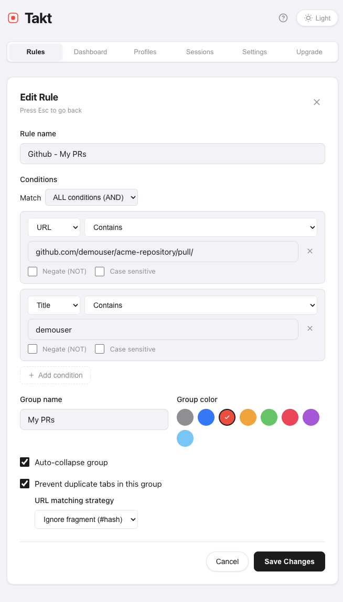
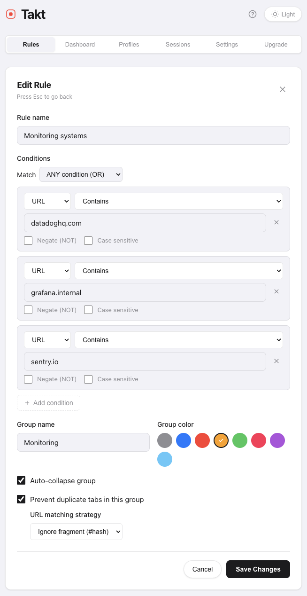

Most tab rules look at one thing: the URL. That works for 80% of cases. The other 20% is where tabs share a domain but belong to different contexts, like Reddit.
Compound rules in Takt let you match on URL and title (or any combination, AND/OR). That covers the cases a single-condition rule can't.
When a single condition isn't enough
A few real cases where URL alone doesn't tell you which group a tab belongs to:
- GitHub/GitLab PRs/MRs you authored vs PRs/MRs you're reviewing. Same domain, same pull path but different mental context. Authoring is "in flight." Reviewing is "todo."
- Google Docs drafts vs published docs. Same
docs.google.com. The title is[DRAFT] XorXfor example. - Linear issues assigned to you vs everyone else's. Same workspace URL. Title contains your name or doesn't.
- Slack channels by team. Same
app.slack.com. The title carries the channel name:#eng-backend - Acme Slack.
Each of these needs two pieces of info to sort correctly. Those are just examples that are
highly software-development oriented, but you can apply the same principles to many other
domains that are not necessarily related to a particular profession.
How a compound rule looks
Open Takt, go to "Manage rules," click "+ New rule." Switch the condition block to
AND (or OR, depending on what you need). Add multiple conditions.
Example with a "My open PRs" rule:
- Condition 1: URL contains
github.com/{yourusername}/{yourrepository}/pull/ - Condition 2: Title contains
[your username] - Group: My PRs
- Color: red

Now every PR with you in the title lands in red. Every other PR you happen to open lands
in the regular Dev group via your domain rule.
Three setups that pay off immediately
Drafts vs published Google Docs
- Domain:
docs.google.com - AND
- Title contains:
[DRAFT] - Group: Drafts (orange)
Anything you tag with
[DRAFT] in the doc title gets pulled into Drafts. The
rest stay in your normal Docs group.
Authored PRs vs review queue
- URL contains:
github.com/{yourusername}/{yourrepository}/pull/ - AND
- Title contains:
[your username] - Group: My PRs (red)
One Slack workspace, multiple project channels
- Domain:
acme.slack.com - AND
- Title contains:
#project-alpha - Group: Alpha (purple)
Repeat per project. All your Acme Slack tabs route to the right project group based on
which channel is open.
OR for catch-alls
OR is useful when several distinct conditions all belong in the same bucket.
All your monitoring tabs in one group:
- URL contains:
datadoghq.com - OR
- URL contains:
grafana.internal - OR
- URL contains:
sentry.io - Group: Monitoring (orange)

You could write three separate rules, but OR keeps it as one rule for the same group.
Easier to manage and only counts as one rule against your quota.
What this actually fixes
Single-condition rules force a choice: either everything from a domain goes into one group,
or you have to manually move the exceptions.
Compound rules let you describe context: "GitHub PRs where I'm the author" is a context,
"Google Docs in draft state" is another one. The URL and title alone can't see it, but
together they can.
A few practical notes:
- Title matching is also a Premium feature on its own, useful even without AND/OR.
- Specificity matters. A compound rule with three AND conditions runs against fewer tabs, so order from cheapest to most specific in your head when you write them.
- Why this is a Premium feature. Simple rules sort by where a tab lives. Compound rules sort by what it is: "PRs I authored", "docs in draft", "channel #project-alpha." That's a different category of capability, and a different category of work for the matcher (observing title changes, evaluating multiple conditions on every tab event). The free tier covers location-based sorting because that's enough for basic users. Compound matching is a more advanced capability that benefits power users.
Add Takt to Chrome it's free, no account needed. Nothing leaves your browser.